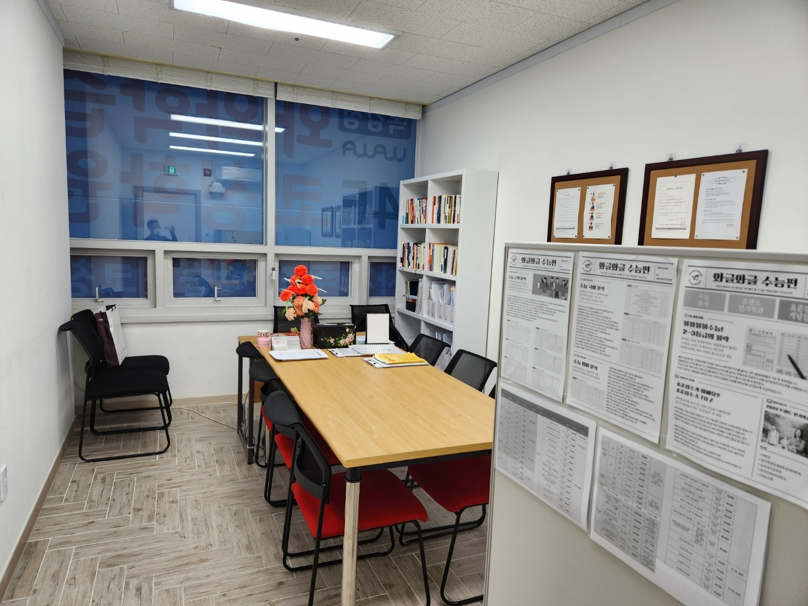
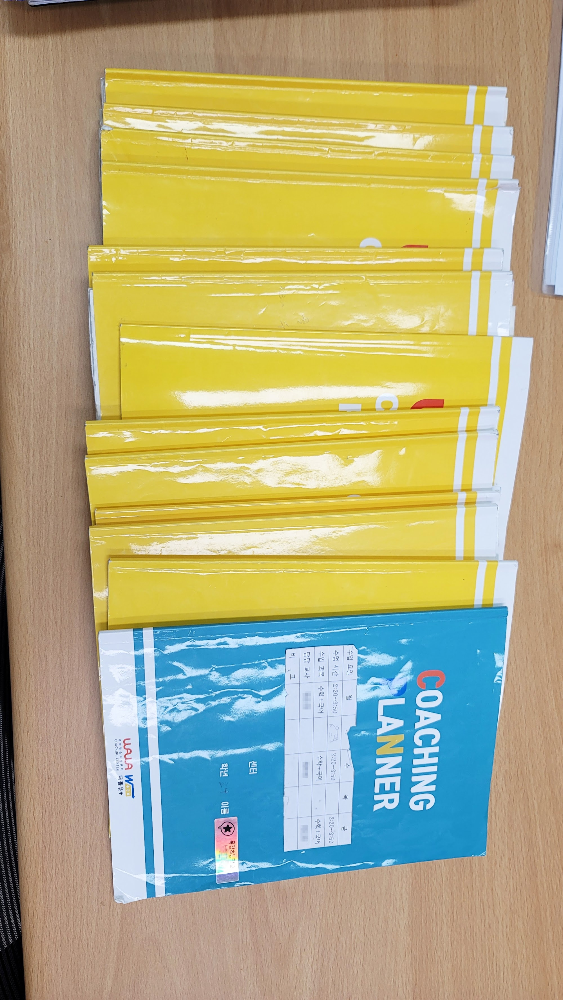
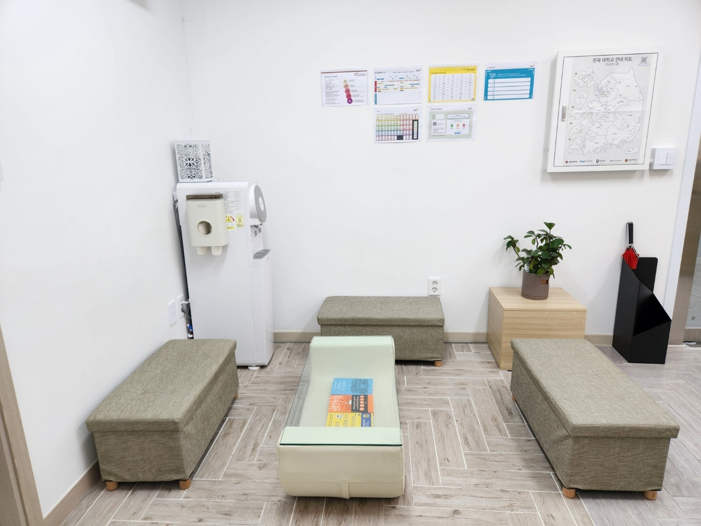

안녕하세요, 경기 시흥시 조남동 목감지구 와와학습코칭 목감점입니다. 오늘은 여름방학 마무리와 2학기 내신 대비 이야기를 학부모님께 전해드립니다.
개학이 코앞, 2학기는 지금 준비해야 합니다
조남초·목감초·조남중·목감고 학생들을 지도해 보면, 2학기는 1학기보다 진도가 빠르고 단원이 어렵습니다. 수학은 함수·도형, 과학은 화학·생명 단원처럼 까다로운 내용이 몰려 있어, 개학 후 따라잡으려 하면 이미 늦습니다. 남은 방학 동안 2학기 앞부분을 미리 잡아두는 것이 첫 시험을 지키는 열쇠입니다.
목감지구·조남동은 학구열이 높은 동네입니다. 그래서 목감점은 이 방학 마무리 시기에 2학기 전과목 내신을 앞서 준비합니다.

목감점의 2학기 대비 코칭
막연히 예습만 하는 것으로는 부족합니다. 목감점은 코칭 플래너로 하루 학습량과 목표를 함께 관리하며 이렇게 지도합니다.
- 수학 — 2학기 핵심 단원을 개념부터 선행하고, 틀린 유형을 분류해 약점을 좁히기 (시흥 수학학원·수학 과외가 필요했던 학생에게)
- 영어 — 2학기 교과서 어휘·어법과 지문을 미리 익히고 서술형에 대비하기 (목감 영어학원·영어 과외)
- 국어 — 비문학 독해와 문학 개념을 학교 지문 중심으로 다지기 (국어학원)
- 통합과학·통합사회 — 개념을 흐름으로 이해하고 수행평가 유형을 미리 연습하기 (과학학원)
이렇게 남은 방학을 보내면 2학기 첫 시험에서 출발선이 완전히 달라집니다.

방학 마무리가 2학기의 격차를 만듭니다
학기 중에는 진도에 쫓겨 앞서 준비할 여유가 없습니다. 개학 직전인 지금이야말로 2학기 내신을 미리 잡을 수 있는 결정적 시기입니다. 목감지구·조남동 학부모님들, 우리 아이의 2학기 성적은 지금 이 방학에 시작됩니다.
와와학습코칭 목감점 학년별 공부 방법
시흥 와와학습코칭(와와학습코칭 목감점)은 초등학생·중학생·고등학생 각 학년에 맞는 공부 방법으로 지도합니다. 조용한 자습실·공부방에서 스스로 공부하고, 영어학원·수학학원·과학학원·국어학원처럼 과목별 코칭까지 한곳에서 받을 수 있습니다.
- 초등학생 (초3·초4·초5·초6) — 스스로 공부하는 습관과 기초 개념 잡기. 목감·조남동 초등 수학학원·영어학원·공부방을 찾으신다면.
- 중학생 (중1·중2·중3) — 전과목 내신 대비와 고등 준비, 오답 정리와 서술형 훈련. 시흥 중등 수학학원·영어학원·과학학원·국어학원.
- 고등학생 (고1·고2) — 내신과 수능을 함께 잡는 자기주도학습 플래닝과 취약 과목 집중. 시흥 고등 영수학원·종합학원·자기주도학습.
와와학습코칭 목감점 위치와 주변
- 🏢 위치 — 경기 시흥시 수풀안길 14-23 4층 402호 (목감지구, 조남동)
- 🏘️ 인근 — 목감호반베르디움·목감센트럴자이 등 목감지구 아파트 단지에서 가깝습니다.
📍 와와학습코칭 목감점 센터 정보 자세히 보기 — 주소·전화·인근 학교 안내를 확인하실 수 있습니다.
와와학습코칭 목감점 인근 학교
시흥 와와학습코칭(와와학습코칭 목감점)은 인근 학교 학생들의 내신·수능을 함께 준비합니다. 아래 학교에 다니는 학생이라면 영어학원·수학학원·과학학원·국어학원을 따로 찾을 필요 없이, 가까운 우리 센터에서 과목별 1:1 자기주도학습 코칭·과외를 받을 수 있습니다.
- 인근 초등학교 — 조남초등학교·목감초등학교 영어학원·수학학원·과학학원·국어학원·공부방
- 인근 중학교 — 조남중학교 영어 과외·수학 과외·과학학원·국어학원
- 인근 고등학교 — 목감고등학교 영어학원·수학학원·내신·과외